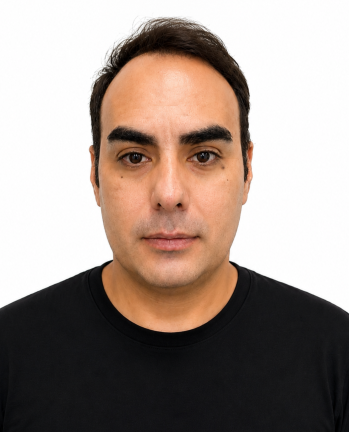

01 / PLANEJAMENTO
Planejamento industrial e PPCP
Cronogramas, avanço físico, integração entre planejamento, produção, engenharia, qualidade e materiais.
Engenheiro Mecânico, Engenheiro de Software e Técnico Industrial, com mais de 15 anos de experiência em planejamento, qualidade, produção, sistemas industriais e transformação digital aplicada a refinarias, pipe shops, estaleiros e grandes projetos industriais.

Profissional com sólida atuação em refinarias, pipe shops e estaleiros, especialista em sistemas digitais de gestão como Controltub e Zeppelin, análise de dados e automação de processos industriais.
"Transformar dados em inteligência estratégica para a tomada de decisão."
Forte vivência em planejamento de projetos e integração multidisciplinar entre engenharia, produção e qualidade, com uso de tecnologias emergentes — IA, Big Data e aplicações próprias — para otimizar produtividade, garantir rastreabilidade e reduzir custos. Reconhecido pela capacidade de inovar processos e desenvolver soluções digitais sob medida.
Cronogramas, avanço físico, integração entre planejamento, produção, engenharia, qualidade e materiais.
Gestão e evolução de Controltub, Zeppelin, relatórios, consultas SQL, automações e suporte aos usuários.
Tubulação, caldeiraria, fabricação, montagem, spools, juntas, materiais e documentação técnica.
Controle técnico e documental, inspeções, relatórios, ensaios e conformidade industrial.
Power BI, SQL, Excel avançado, indicadores e transformação de dados em apoio à decisão.
PWA, aplicações web, integrações, operação offline e ferramentas personalizadas para campo e fábrica.
Coordenação de profissionais, definição de prioridades, suporte às obras e alinhamento com stakeholders.
Digitalização de rotinas, melhoria contínua e aplicação prática de IA, automação e análise de dados.
PPCP e integração entre Planejamento, Produção e Qualidade.
Controltub, Zeppelin, LMS, AutoCAD/GstarCAD e outras plataformas de gestão de obra.
SQL, Power BI, Excel avançado e inteligência artificial aplicada.
Planejamento, execução e controle de projetos industriais de médio e grande porte, do escopo à entrega.
Coordenação de analistas, assistentes e jovem aprendiz, com foco em desenvolvimento e resultado.
Controle de prazos e custos com dashboards em Power BI e consultas em banco de dados, dando visibilidade em tempo real ao avanço dos projetos.
Identificação de gargalos e automação de rotinas para ganho de eficiência operacional.
Resolução de problemas e tomada de decisão sob pressão, em ambiente de chão de fábrica.
Empresa com mais de 20 anos de montagem eletromecânica, 120+ obras realizadas e atuação em 30+ indústrias, com certificação ISO.
Aplicação própria para gestão de dados de campo — controle de spools, estruturas de suporte e materiais em obras industriais, com armazenamento offline e sincronização de planilhas em tempo real.
Aplicação para consulta e geração de relatórios de status de spools, dando visibilidade rápida do avanço físico e da situação de cada item em campo.
Aplicação para preenchimento de RDOs em campo, com registro de fotos direto pela câmera. Otimizada para rodar de forma fluida mesmo com muitas imagens e uso prolongado em obra, usando armazenamento local eficiente e salvamento automático.
Aplicação para registro e consulta de medições de espessura em tubulações e equipamentos, organizando os dados de inspeção para acompanhamento de corrosão e conformidade com normas técnicas.
Aplicação para cálculo de área em metros quadrados de chapas e componentes de caldeiraria, agilizando o levantamento de quantitativos para orçamento e produção.
Plugin desenvolvido para AutoCAD e GstarCAD que lê o desenho — direto do DWG aberto ou a partir do PDF exportado, conforme o caso — e gera automaticamente a lista de materiais correspondente, exportada em planilha Excel/CSV pronta para conferência, orçamento ou produção.